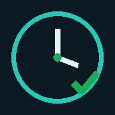

El PIN evita que alguien marque por otra persona. Se pide una sola vez en este celular.
📍 Al marcar se guarda tu ubicación solo en ese momento, para registrar dónde marcaste. No se sigue tu ubicación durante el día.
Esta copia todavía no está conectada a la planilla de Sermancontrol. Avísale a Alejandro.